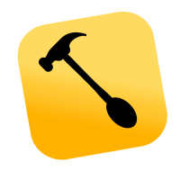
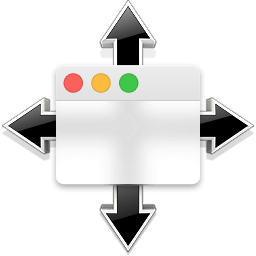
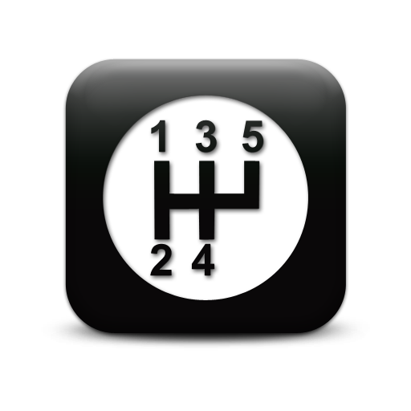
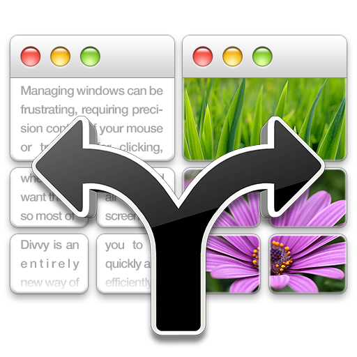
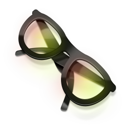
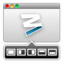
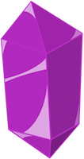

class: center, middle name: opening # What is <strike>a</strike> Hammerspoon  --- layout: true class: topic-template # Hammerspoon --- ## According to hammerspoon.org > This is a tool for powerful automation of OS X. At its core, Hammerspoon is just a bridge between the operating system and a Lua scripting engine. What gives Hammerspoon its power is a set of extensions that expose specific pieces of system functionality, to the user. --- Hammerspoon is a productivity tool that offers the following features: * Window management (size, location, placement) * Watchers - screen, applications, battery, filesystem, wifi, usb * Hotkey support * Definitions are written in Lua! --- layout: false class: center, middle # Alternatives --- <div class="alternative">  <p>SizeUp</p> </div> <div class="alternative">  <p>ShiftIt</p> </div> <div class="alternative">  <p>Divvy</p> </div> <div class="alternative">  <p>Spectacle</p> </div> <div class="alternative">  <p>Moom</p> </div> <div class="alternative">  <p>Amethyst</p> </div> --- layout: false class: center, middle # Features --- layout: true class: topic-template # Features --- ## Window management --- ## Watchers --- ## Hotkeys --- ## Written in Lua --- layout: false class: center, middle # Demo --- ## How to get started [hammerspoon.org: Getting started](http://www.hammerspoon.org/go/) [hammerspoon.org: API docs](http://www.hammerspoon.org/docs/index.html) [My setup]() --- layout: false class: center, middle ## Thanks<i class="twa twa-grinning"></i> <!-- ------------------------------------------------------------------------------------------- -->